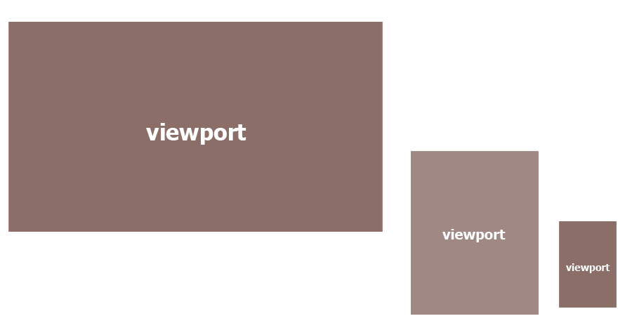
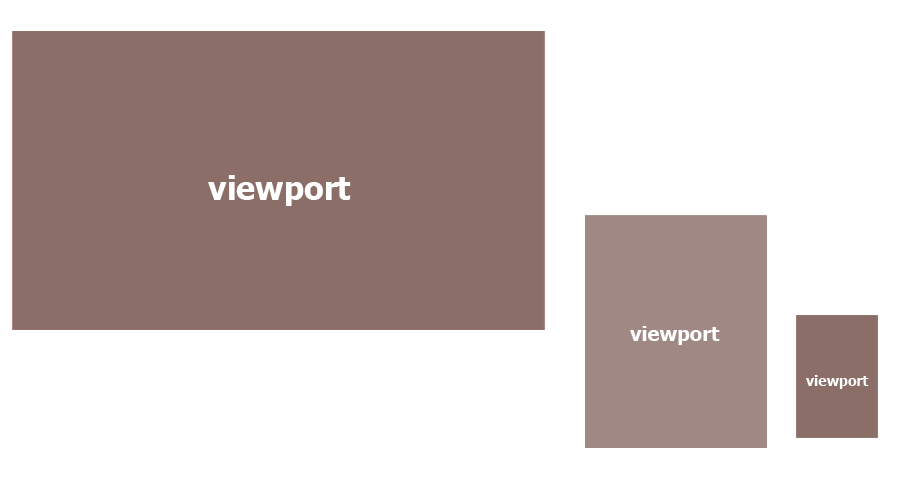

O que é?
Design que se adapta aos diferentes meios em que o site é acessado
Adaptar a experiência de acordo com o dispositivo.
Design... Responsável?
"Entregar a mesma informação — útil e priorizada — para todo mundo!"Sérgio Lopes - A Web mobile
Da onde veio?
Ethan Marcotte
"O controle que os designers têm no meio impresso e, muitas vezes, desejam ter no meio web, é simplesmente um reflexo da limitação da página impressa. Devemos aceitar o fato de que a web não tem as mesmas restrições e projetar (o web design) para essa flexibilidade" Ethan Marcotte
John Allsopp
"O controle que os designers conhecem na mídia impressa, e constantemente desejam na web, é simplesmente em função da limitação da página impressa. Devemos abraçar o fato de que a Web não tem as mesmas restrições, e projetar para essa flexibilidade"
A trinca do Design Responsivo
Layout fluído
Recursos flexíveis
Media queries
Layout fluído
- Sem medidas fixas
- Adaptação natural
- Evita barra de rolagens
- Grid flexível
- Alvo / Contexto = Resultado
- Meta tag viewport
Alvo / contexto = resultado
Alvo / contexto = resultado
300 / 940 = 31.91489361702128%
620 / 940 = 65.95744680851064%
20 / 940 = 2.12765957446809%
Viewport
 

Recursos flexíveis
Media queries
Adaptar e melhorar apresentação dos elementos de acordo com a resolução
@media only screen and (max-width: 320px) { /* ... */ }
@media only screen and (max-width: 480px) { /* ... */ }
@media only screen and (max-width: 768px) { /* ... */ }
Mas... meu site já está funcionando em dispositivos móveis

Tá funcionando...

Isso não quer dizer que a experiência do usuário seja boa...
Mas... eu quero uma versão mobile e uma desktop do meu site
Responsivo
M ponto
http://www.meusite.com.br/minha-pagina
Não existe bala de prata.
A solução ideal varia de acordo com o projeto.
Mobile First
Luke Wroblewski
Primeiro planejar para dispositivos móveis.
Três pontos mais importantes em relação a sites para dispositivos móveis
- Foco no conteúdo
- Foco no conteúdo
- Foco no conteúdo
Processo padrão
Retrabalho...
Mobile First
Do menor para o maior.
Progressive enhancement
Melhoria progressiva da página
"Mobile first forces you to focus."
Luke Wroblewski
Acesso
Meio e contexto
Generalização
Nunca saberemos...
Acesso a todas as informações
Resize
Usuário final não vai ficar redimensionando o navegador.
O que importa pra ele é:
- encontrar a informação que precisa.
- a experiência ao utilizar a aplicação.
Experiência do usuário
Algumas considerações
- Tela grande
- Energia
- Teclado
- Mouse
- Cadeira e mesa
- Tela pequena
- Bateria
- Dedo gordo
- ...
Botões
Dedo não é mouse
Com o mouse conseguimos ter precisão no click.
Utilizando o touch a margem de erro é maior porque: nosso dedo é gordo..
Inputs
Digitar no celular pode não ser tão legal...
Só isso?

Otimização
RESS
Imagens
Device Lab
Referências
- A Web Mobile - Sérgio Lopes
- Web Design Responsivo - Tárcio Zemel
- Responsive Web Design - Ethan Marcotte
- Responsive Web Design - Thomas Byttebier
- Mobile First Responsive Web Design - Brad Frost
- Mobile First - Horácio Soares
"Mobilize, don’t miniaturize"
Barbara Ballard
"Don’t shrink, rethink"
Nokia